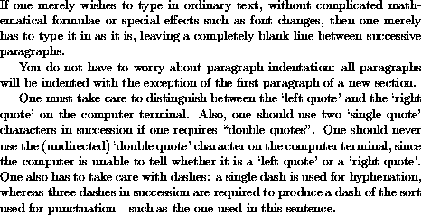

To produce a simple document using LaTeX one should create a
LaTeX input file, beginning with a \documentclass
command and the \begin{document} command, as
described above. The input file should end with the
\end{document} command, and the text of the
document should be sandwiched between the
\begin{document} and \end{document}
commands in the manner described below.
If one merely wishes to type in ordinary text, without complicated mathematical formulae or special effects such as font changes, then one merely has to type it in as it is, leaving a completely blank line between successive paragraphs. You do not have to worry about paragraph indentation: LaTeX will automatically indent all paragraphs with the exception of the first paragraph of a new section (unless you take special action to override the conventions adopted by LaTeX)
For example, suppose that we wish to create a document containing the following paragraphs:
To create this document using LaTeX we use the following input file:
\documentclass[a4paper,12pt]{article}
\begin{document}
If one merely wishes to type in ordinary text, without
complicated mathematical formulae or special effects such
as font changes, then one merely has to type it in as it
is, leaving a completely blank line between successive
paragraphs.
You do not have to worry about paragraph indentation:
all paragraphs will be indented with the exception of
the first paragraph of a new section.
One must take care to distinguish between the `left quote'
and the `right quote' on the computer terminal. Also, one
should use two `single quote' characters in succession if
one requires ``double quotes''. One should never use the
(undirected) `double quote' character on the computer
terminal, since the computer is unable to tell whether it
is a `left quote' or a `right quote'. One also has to
take care with dashes: a single dash is used for
hyphenation, whereas three dashes in succession are required
to produce a dash of the sort used for punctuation---such as
the one used in this sentence.
\end{document}
Having created the input file, one then has to run it through the LaTeX program and then print it out the resulting output file (known as a `DVI' file).